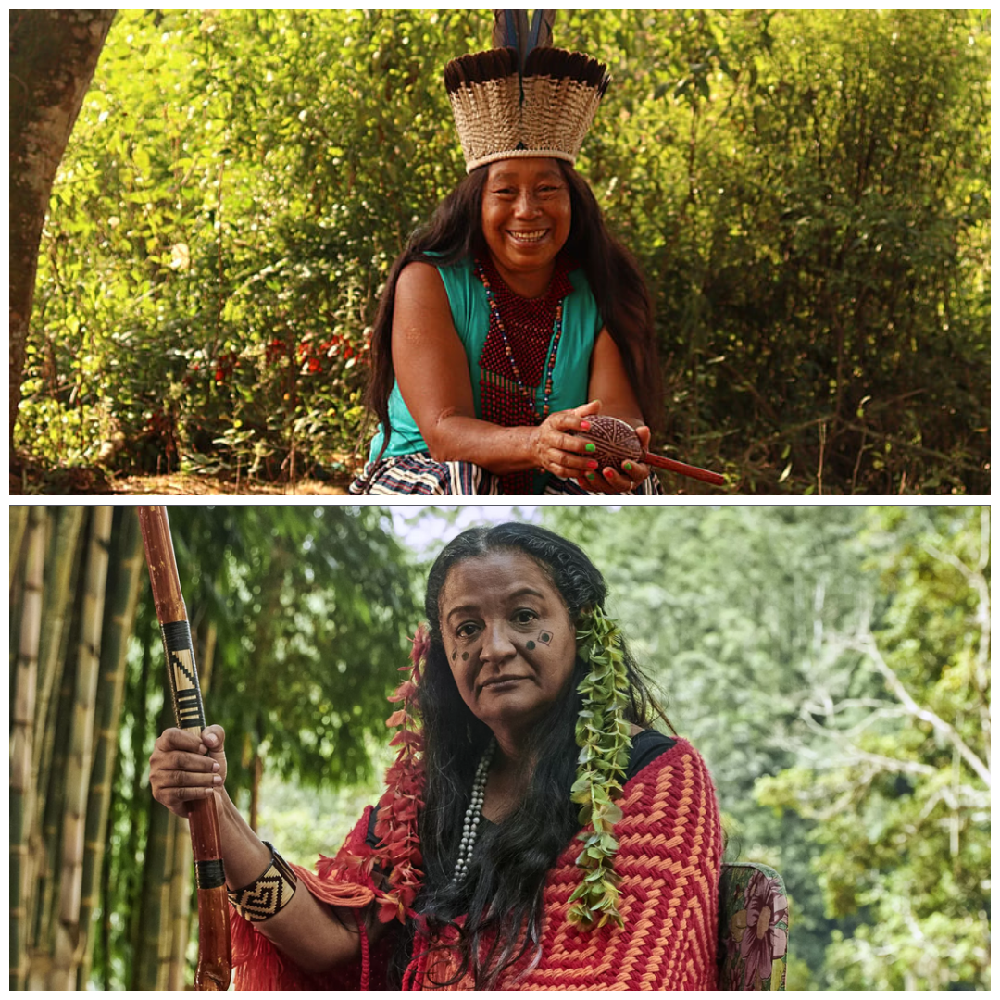
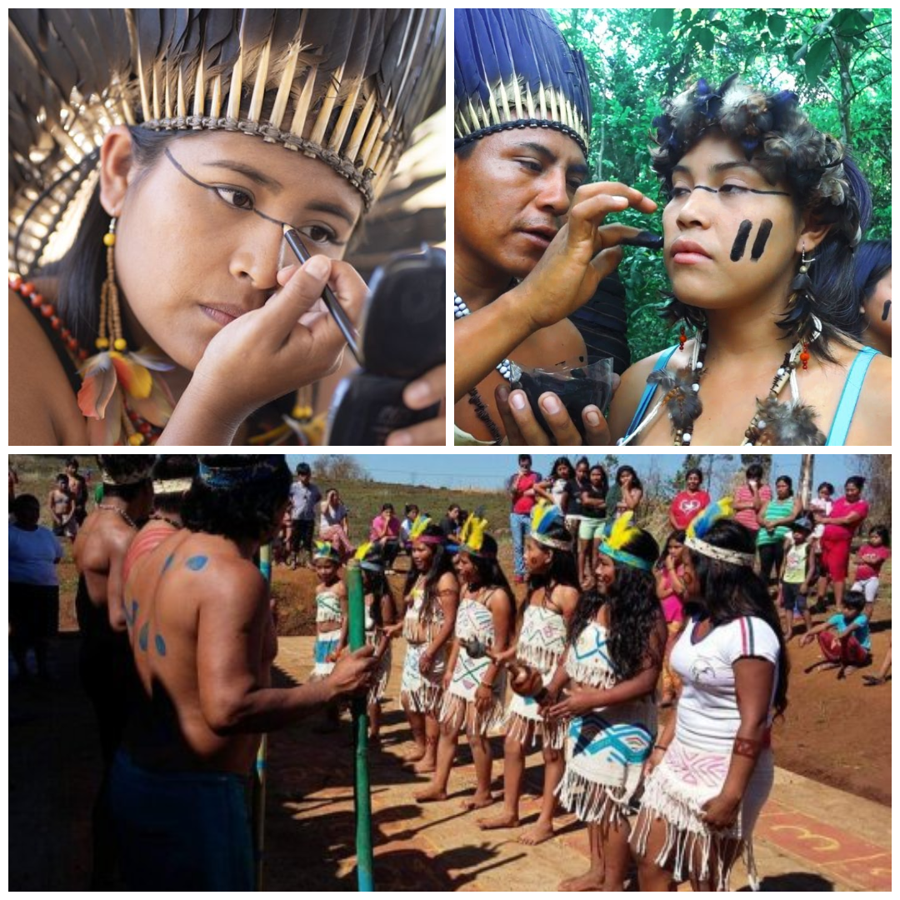
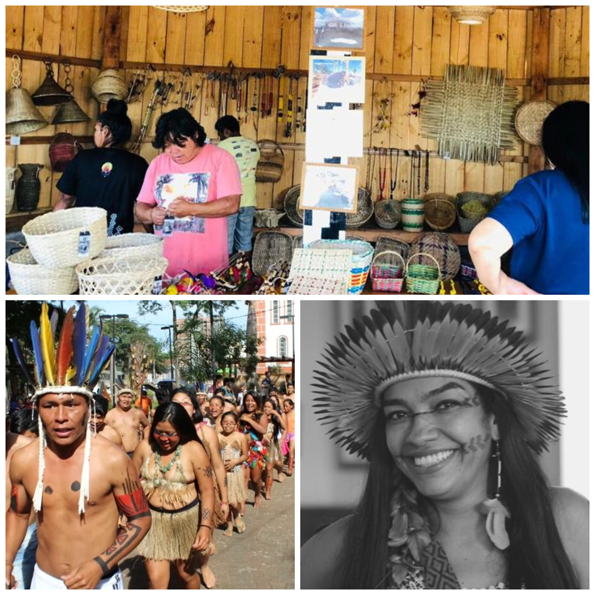

Kaigangs: Um povo em resistência
A cultura que definiu o sul do Brasil
Kaingang: Cultura, História e Tradições:
Os Kaingang são um dos principais povos indígenas do sul do Brasil, habitando os estados do Paraná, Santa Catarina, Rio Grande do Sul e São Paulo. Pertencem ao tronco linguístico Macro-Jê e possuem uma cultura rica, marcada por um forte vínculo com a natureza e uma organização social complexa.
Língua e Tradições:
A língua Kaingang pertence à família Jê e ainda é falada em muitas aldeias, apesar da influência do português. Os mais velhos desempenham um papel essencial na preservação das tradições e do conhecimento ancestral, transmitindo mitos, histórias e práticas culturais.

História e Território:
Os Kaingang são um dos povos indígenas mais antigos do Brasil. Antes da colonização europeia, ocupavam vastas áreas de florestas e campos naturais. A chegada dos colonizadores e a expansão agrícola resultaram na perda de grande parte de seu território, levando a conflitos e deslocamentos forçados. Atualmente, vivem em terras indígenas demarcadas, mas ainda enfrentam desafios
relacionados à posse de suas terras tradicionais.
Organização Social e Cultura:
A sociedade Kaingang é estruturada em dois grupos ou metades clânicas: Kamé e Kairu, que regulam casamentos, relações sociais e cerimônias. Esses grupos são fundamentais na identidade e na organização da comunidade.
Importância e Legado:
Os Kaingang são fundamentais para a preservação da biodiversidade e da cultura indígena brasileira. Sua resistência histórica e seu conhecimento tradicional sobre a floresta são um exemplo da conexão profunda entre os povos indígenas e a natureza. Proteger e valorizar a cultura Kaingang é essencial para manter viva essa herança ancestral.


Artesanato e Expressões Culturais:
Os Kaingang são conhecidos por seu artesanato em madeira e palha, produzindo cestos, esculturas e utensílios tradicionais. Além disso, suas pinturas corporais e grafismos possuem significados espirituais e sociais, sendo usados em rituais e festividades.
Desafios e Lutas Atuais:
Os Kaingang enfrentam desafios relacionados à preservação de sua cultura e território. A invasão de terras indígenas, o desmatamento e a pressão econômica ameaçam seu modo de vida. Movimentos indígenas e organizações sociais trabalham para garantir seus direitos, buscando fortalecer a identidade e a autonomia do povo Kaingang.

Contatọ̣: (41)1111111-1111